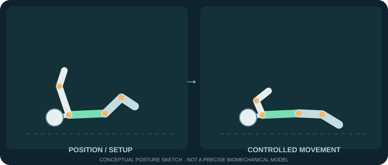

Exercise encyclopedia / Core
Dead bug
Keep ribs and pelvis controlled as an opposite arm and leg extend slowly.
Movement illustration

How to perform it
- Lie on your back, arms up and hips and knees bent.
- Exhale gently to settle ribs and pelvis into a stable position.
- Slowly lower an opposite arm and leg only as far as you can control.
- Return, pause and alternate sides while breathing.
Breathe continuously and use a range that feels controlled and comfortable for your body.
Why this movement matters
Trunk exercises build a capacity to control unwanted movement while breathing. A visible abdominal contraction is not a direct measure of spinal loading or exercise quality.
Progression checkpoint
Extend farther only when rib/pelvis control is consistent.
Equipment and safety
Continue breathing; shorten holds or leverage if abdominal control fades or discomfort increases.
Problem solving
Common mistakes & corrections
Correction: Shorten the reach or move the arms and legs separately.
Correction: Use fewer reps with a brief pause on every reach.
Training progression
Find your next variation
This is one possible route from a lower-demand version to a more demanding version. You can switch back whenever needed; these steps are not fixed tests or guarantees.
- Dead bug
- Hollow body hold
- L-sit tuck
Readiness guidance: Extend farther only when rib/pelvis control is consistent.
Build a practice
Where this fits in a program
Dead bug is a core exercise. Pair it with movements from other patterns over the training week, and choose sets or hold times you can recover from. See the Foundation program for adaptable examples; there is no universally correct repetition target.
Calisthenics Atlas editorial guide · November 2026 · Original conceptual artwork · General audience education